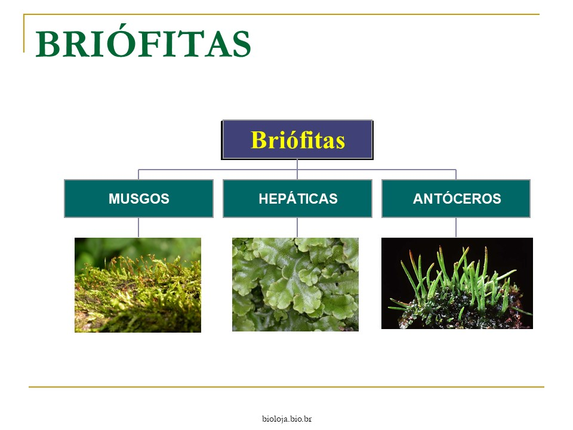
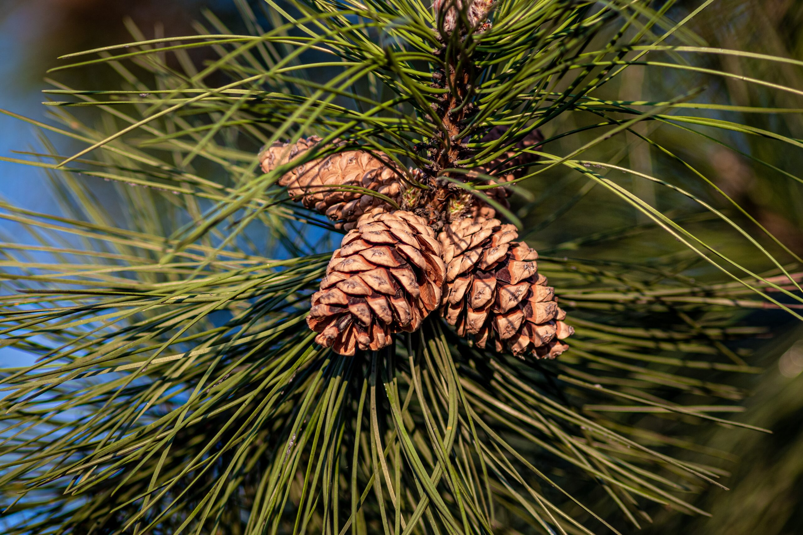
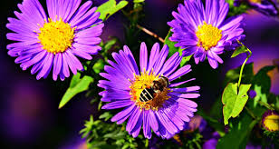

Tipos de plantas
Existem milahres de tipos de plantas, e cada uma com características únicas, vamos ver alguns dos tipos de plantas.
Briófitas
Plantas avasculars (sem vasos condutores), pequenas e dependentes de água para reprodução, como musgos e hepáticas, elas vivem em ambientes úmidos e não tem raízes verdadeiras.

As briófitas possuem diversas caracterstícas, algumas delas são:
- Avasculares: Não possuem vasos condutores de seiva (xilema e floema), o que limita seu tamanho e as leva a viver em ambientes úmidos.
- Ambientes úmidos: Preferem locais com alta umidade e sombra, como florestas tropicais, margens de rios e lagos.
- Dependência de água: A reprodução é sexuada e depende da água para a fecundação, com os anterozoides nadando até as oosferas.
- Ciclo de vida com fase dominante: O gametófito (fase haploide) é a fase dominante e mais visível do ciclo de vida das briófitas, diferente das plantas vasculares, onde o esporófito (fase diploide) é dominante.
- Estruturas não verdadeiras: Não possuem raízes, caules e folhas verdadeiros, mas apresentam estruturas equivalentes como rizoides (fixação), cauloides (caules) e filoides (folhas).
- Importância ecológica: Desempenham papel importante na retenção de água, prevenção de erosão, colonização de novos substratos e abrigo para pequenos animais.
Pteridófitas
Planstas vasculares (com vasos condutores), mas ainda dependem de água para a sua reprodução, como samambaias e avencas.

As caracterstícas das pteridófitas são:
- Vasculares: Possuem tecidos condutores (xilema e floema), o que permite o transporte de água e nutrientes.
- Sem sementes: São chamadas de criptógamas, pois se reproduzem por esporos.
- Ambientes úmidos: Geralmente vivem em locais sombreados e com bastantes umidade, pois dependem de água para sua reprodução.
Gimnospermas
Planstas vasculares com sementes nuas (não protegidas por frutos), como pinheros e ciprestes.

As caracterstícas das plantas dessa classe são:
- Sementes nuas: A principal característica é a ausência de frutos, com as sementes expostas em estruturas chamadas cones ou estróbilos.
- Plantas vasculares: Possuem vasos condutores (xilema e floema) que transportam água, nutrientes e substâncias orgânicas por toda a planta.
- Reprodução por sementes: As sementes são uma inovação evolutiva, protegendo o embrião e auxiliando na dispersão da espécie.
- Independência da água para a reprodução: Não dependem da água para a fecundação, pois o pólen é transportado pelo vento ou por animais, formando um tubo polínico para alcançar o óvulo.
- Plantas terrestres: Predominantemente encontradas em ambientes terrestres, adaptadas a diferentes tipos de clima.
Angiospermas
Plantas vasculares com sementes protegidas por frutos, as plantas mais diversas e abundantes, como rosas, girassóis e árvores frutíferas.

Suas caracterstícas são:
- Flores: Órgão reprodutivo das angiospermas, geralmente com estruturas coloridas e atraentes para atrair animais polinizadores.
- Frutos: Estrutura que se desenvolve a partir do ovário da flor após a fecundação, envolvendo e protegendo as sementes.
- Sementes: Contêm o embrião da planta e são protegidas pelo fruto.
- Plantas vasculares: Possuem vasos condutores (xilema e floema) para o transporte de água e nutrientes.
- Ciclo de vida com gerações: Alternam entre uma fase sexuada (gametófito) e uma fase assexuada (esporófito).
- Adaptações: Possuem diversas adaptações para a dispersão de sementes, como frutos que flutuam na água, grudam em animais ou são dispersos pelo vento.